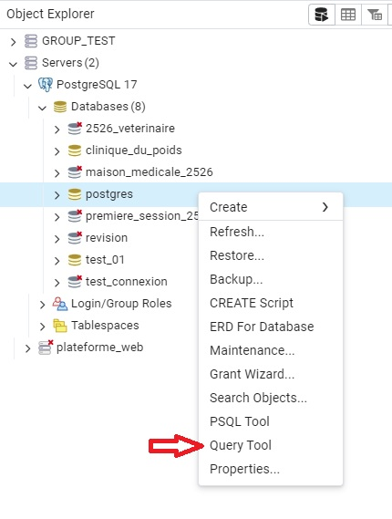
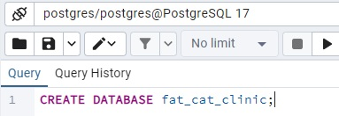
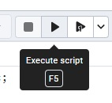
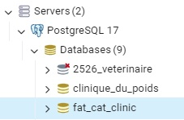
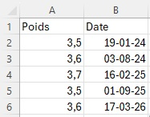
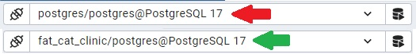
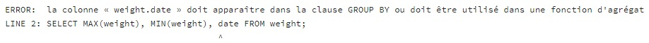

Première DB
- Introduction
- Créer une base de donnée
- Créer une table
- Ajouter des enregistrements
- Lire les enregistrements
- Conclusion
Introduction
Dans cette section, nous allons créer notre première
DB
"fat_cat_clinic" ayant pour but d'enregistrer le poids de votre animal de compagnie favoris. Ce qui constituera
notre fil rouge pour les prochaines sections.
Nous verrons comment enregistrer et récupérer des données dans cette DB et nous manipuleron pgAdmin pour la
première fois
Notez bien que cette section ne fera qu'introduire les différents concepts de création, lecture, écriture...
Ceux-ci seront détaillés plus avant dans la suite de ce cours.
Nous utiliserons Postgres et PGAdmin dans ce cours.
Il n'est pas nécessaire d'utiliser un outil comme PGAdmin pour utiliser une base de données Postgres.
Nous pourrions directement utiliser la console mais, par simplicité, ce ne sera pas fait dans ce cours.
Créer une base de données
Mettons nous en situation : la dernière fois que vous avez été chez le vétérinaire avec votre animal de companie,
il vous a mis en garde sur le poids de votre chat et vous a demandé de le garder à l'oeil.
Vous décidez de mettre en place une base de données qui contiendra les différentes pesées (date et poids) de votre
chat.
Créer une base de données pour si peu est, très clairement, une solution déraisonnable.
Vous seriez tout aussi bien logé avec un crayon et du papier...
Mais comme beaucoup d'exemples dans ce cours, il faudra savoir mettre ces détails de côté.
Lancez le programme pgAdmin et connectez-vous.
À gauche se situe l'object explorer avec lequel vous pourrez facilement naviguer entre vos bases
de données.
Naviguez dans celui-ci en ouvrant l'élément database.
Là, vous devriez voir une première base de données nommée
postgres
À l'aide d'un clique droit sur cette dernière, ouvrez le menu contextuel et sélectionnez l'option Query
Tool
Le query tool vous permet d'écrire vos
queries
SQL et ainsi de communiquer avec votre système de gestion de base de données.

Dans le query tool, entrez la ligne de code suivante pour créer votre première base de données
CREATE DATABASE fat_cat_clinic;

Pour ceux qui parlent un peu anglais, vous comprendrez rapidement ce dont il est question ici.
Nous créons une base de données dont le nom est fat_cat_clinic. Le ; signifiant la fin de
la requête sql
Avant d'exécuter ce code, remarquez aussi que certains mots sont colorés.
Il s'agit de mots clés spécifique au langage SQL et sont dit réservés
Ainsi, on ne nommera pas de base de données DATABASE ou encore
CREATE
Concluez la création de votre base de donnée en utilisant la touche F5 ou en utilisant le bouton d'exécusion de requête représenté par un petit triangle et situé juste au dessus du query tool.

Faites un clique droit sur l'objet database de l'explorateur d'objet et
sélectionnez l'option refresh pour voir s'affichez votre première
base de données.
Félicitations

Crée une table
Vous avez maintenant votre base de données, mais vous ne pouvez pas encore en faire grand chose. Pour fonctionner correctement, votre DB va avoir besoin de tables.
Une table est une collection de données structurées. C'est à dire, un tableau dans lequel ranger vos données selon une structure définie en amont.
Dans une table, on pourra parler de colonnes qui seront nommées et définiront, entre autre, le
type de donnée
et de rangées représentant chacunes un enregistrement de données au format précisé par les
colonnes.
Pour ceux qui utiliseraient des programmes comme excel, imaginez une base de données comme un classeur excel.
Tant que vous n'y ajoutez pas de pages, vous ne pouvez pas faire grand chose avec.
Les tables des bases de données peuvent d'ailleur sembler similaire à un tableau réalisé sur excel.

Pour bien comprendre, nous allons créer une table dans la base de données fat_cat_clinic. Le but de cette table sera d'enregistrer régulièrement les pesées de notre animal. Nous allons donc nommer cette table weight et réfléchir aux données nécessaires pour garder un oeil à l'évolution du poids d'un chat.
Un bon début sera de prendre note du poids et de la date de pesée. Nous aurons donc deux colonnes : weight (poids) et date.
En plus de définir le nom de ces colonnes, il est nécessaire d'en définir le type. Pour le poids, nous utiliserons le type decimal permettant d'encoder des nombres décimaux en spécifiant la précision souhaitée. Pour la date, nous utiliserons le type date permettant d'encoder des... dates.
Il existe et nous utiliserons d'autres types dans ce cours. Vous pouvez trouver une référence complète sur les types disponibles en suivant ce lien vers la documentation officielle .
Pour l'instant, vous pouvez vous contentez de lire, comprendre, copier et exécuter le code ci-dessous dans le query tool de pgAdmin
Attention à bien être connecté sur votre nouvelle base de données pour exécutrer ce code ! (cette information est disponible au dessus de l'éditeur de requête)

CREATE TABLE weight( weight decimal(3,1), date date );
Détaillons ensemble ce code :
CREATE TABLE weight(
permet, vous l'aurez compris, de créer une table dont le nom sera weight la parenthèse
permet de spécifier ce que contiendra cette table
weight decimal(3,1)
permet de créer, dans la table weight, une colonne weight de
type décimal.
Beaucoup de déclaration de type demandent des informations
complémentaires. Dans le cas de decimal, il est possible de spécifier entre parenthèses la précision (le nombre de
chiffres dans le nombre) et l'échelle (le nombre de chiffres derrière la
virgule) souhaitée.
Ainsi, decimal(3,1) nous permettra d'encoder des poids en kg avec une précision à
l'hectogramme et allant jusqu'à 99,9 kg. Nous devrions être bon pour nos chats.
date date
permet, comme la ligne précédente, de créer une colonne. Celle-ci sera
de type date
N'oubliez pas de fermer la parenthèse et d'ajouter un ;
Dans l'outils pgadmin, les tables de votre base de données peuvent sembler un peu cachées la première fois que
vous souhaitez y accéder.
Pour voir le résultat de votre travail, allez dans les points de menu suivants :
databases/votre_db/schemas/public/tables
Si ce point de menu est encore vide, pensez à rafraichir le point de menu.
Ajouter des enregistrements
Maintenant que notre
Nous allons la
"populer" avec quelques informations.
Comme pour le point précédent, lisez attentivement ce code et exécutez le
INSERT INTO weight (weight, date) VALUES (3.5, '2024-01-19');
INSERT INTO weight
permet d'insérer des données dans la table weight
Les informations entre parenthèses
(weight, date)permettent de spécifier quelles valeurs seront insérées et dans quel ordre.
Cette information pourrait être omise tant que les valeurs insérées sont écrites dans l'ordre des colonnes de la table ciblée.
Néanmoins, inclure cette information permet, entre autres, d'éviter d'éventuelles erreurs. Je vous invite donc à ajouter systématiquement cette information.
VALUESprécède les données à insérer qui sont reprises entre parenthèses
(3.5, '2024-01-19'). Notez que la date est entourées de ' et au format yyyy-MM-dd
Pour bien faire, nous allons ajouter quelques données supplémentaires avec le code suivant :
INSERT INTO weight (weight, date)
VALUES (3.6, '2024-08-03')
,(3.7, '2024-07-06')
,(3.5, '2024-06-01')
,(3.6, '2024-05-04')
,(3.4, '2024-04-06')
,(3.4, '2024-03-02')
,(3.5, '2024-02-03');
Ici, la même commande est utilisée pour insérer une série de données.
Lire les enregistrements
Maintenant que nous avons créé une base de données, créé une table et inséré une série de données, nous pouvons
commencer à lire celles-ci.
Nous allons donc en profiter pour faire quelques requêtes.
La première, ci-dessous, va nous permettre de lire les informations contenues dans la table
SELECT weight, date FROM weight;
Les deux mots clés à retenir ici sont
SELECTet
FROM.
SELECTsera suivi des colonnes à récupérer. Vous pourriez donc ne sélectionner que les poids avec une requête
SELECT weight FROM weight;
FROMpermet de spécifier la table dans laquelle récupérer les données.
Une seconde version de cette requête sera la suivante
SELECT * FROM weight;
Ici, le symbole * sera utilisé comme joker pour signifier toutes les colonnes.
Pratique pour les tests, mais à ne pas utiliser de manière systématique dans vos projets de développement. Nous en
reparlerons plus tard.
Order by
Avant de retourner voir notre vétérinaire, il serait intéressant de récupérer nos données "triées" par date pour
pouvoir
visualiser plus facilement l'évolution du poids du chat.
Bonne nouvelle, c'est possible avec la paire de mots clés
"ORDER BY".
SELECT * FROM weight ORDER BY date;
Il sera même possible de choisir l'ordre du tri en ajoutant soit
ASCou
DESCaprès notre
ORDER BY
SELECT * FROM weight ORDER BY date DESC;
Pratique ! Et cela ne s'applique pas qu'aux dates ! Même si dans notre cas, trier par poids semble moins pertinent, je vous invite à essayer.
Poids max, min et moyen
De la même manière, d'autres informations seraient intéressantes à récupérer avant d'aller chez notre
vétérinaire.
Par exemple, le poids maximum ou minimum de notre chat.
Pour ce faire, nous pourrions utiliser plusieurs techniques.
Par exemple, trier sur le poids en ascendant ou descendant et ne conserver qu'un unique résultat retourné par la
base de données.
Cela fonctionnerait, mais il y a mieux.
Nous avons vu qu'il était possible de spécifier les colonnes souhaitées dans la valeur de retour attendue.
Il est en réalité possible d'appliquer des modifications à ces résultats avec, par exemple, des petits calculs
comme ceci :
SELECT weight + 10, date FROM weight ORDER BY date;
Certe, pas très utile dans notre cas... Mais comme dans vos cours de programmations, notez qu'il est aussi
possible d'utiliser des fonctions!
Celles qui nous intéressent ici sont les suivantes : MAX, MIN et AVG
SELECT MAX(weight), MIN(weight) FROM weight;
Après exécution, nous remarquons une particularité : plutôt que d'avoir toutes les pesées de notre table, nous ne
disposons que d'une unique réponse.
Ceci est dû à l'utilisation de fonctions dites "d'agrégation".
Une fonction d'agrégation, comme son nom l'indique, va agréger les résultats en une unique réponse.
Ceci crée un problème... Il n'est "plus possible" d'ajouter la date au résultat... Essayons :
SELECT MAX(weight), MIN(weight), date FROM weight;
Nous obtenons l'erreur suivante :

Qu'est-ce que ça veut dire?
Comme dit précédement, nous avons "gommés" les différentes lignes de résultat de tel manière à obtenir un unique
résultat.
Pour cette raison, on ne peut plus récupérer les données spécifiques des différentes lignes.
Si je souhaitais récupérer la date, ici, laquelle devrais-je prendre?
Celle de la plus petite pesée? De la plus grande? La première date récupérée? Ça n'aurait pas beaucoup de sens.
Ainsi, on ne peut plus la récupérer.
Il existe néanmoins une solution que le message d'erreur nous invite à explorer : "la colonne doit apparaître
dans la clause GROUP BY"
Qu'est-ce que ça veut dire?
Il est possible quand on souhaite faire des agrégats, d'utiliser une clause "GROUP BY".
Cette close va permettre, en référençant une colonne, de sectionner les éléments d'une tables en plus petites
portions sur laquelle exécuter
nos opérations.
Essayons :
SELECT MAX(weight), MIN(weight), date FROM weight
GROUP BY date;
Le résultat semble... Peut satisfaisant...
Ce qu'il serait intéressant, c'est d'avoir aussi le poids à la date de pesée.
Ainsi, nous pourrions faire la différence entre le poids max et le poids courant.
Mais si nous essayons :
SELECT MAX(weight), MIN(weight), weight, date FROM weight
GROUP BY date;
Même erreur qu'avant...
Nous pouvons tenter de résoudre le problème avec la même solution qu'avant :
SELECT MAX(weight), MIN(weight), weight, date FROM weight
GROUP BY date, weight;
Et à première vue, ça semble fonctionner...
Sauf si on regarde les valeurs des max et min...
Avec cette requête, ce que nous faisons réellement, c'est de séparer les données récupérées en petits groupes
(GROUP BY). Petits groupes qui se basent sur la date et le poids...
On cherche donc, pour chaque groupe, le min et le max. Mais en séparant les données en autant de groupe que de
données... Pas très pratique (dans notre cas)...
Nous verons comment résoudre ceci au prochain chapitre.
En vrac, voici quelques fonctions d'aggrégation : MIN, MAX,
AVG, SUM, COUNT.
Une liste plus complète est disponible
ici
Exercices
Création de table - 1
En vous basant sur la documentation
officielle, rechercher les types les plus adéquats pour créer une table dont le but est de contenir le nom
et le prénom d'une personne.
Justifiez votre choix
Création de table - 2
En vous basant sur la documentation
officielle, rechercher les types les plus adéquats pour créer une table dont le but est de contenir les
résultats d'examen d'un étudiant.
Justifiez votre choix
Création de table - 3
En vous basant sur la documentation
officielle et des recherches internet, rechercher les types les plus adéquats pour créer une table dont le
but est de récupérer le nom et l'âge d'un animal de companie.
Justifiez votre choix
Création de table - 4
Créer une table "article" capable de faire fonctionner la requête suivante :
INSERT INTO article
(nom, prix)
VALUES
('pain au chocolat', 2.00),
('croissant au beurre', 2.00),
('croissant au chocolat', 2.50);
Création de table - 5
Est-ce que le code suivant compile? Expliquez
CREATE livre(
titre,
isbn
);
Création de table - 6
Est-ce que la requête suivante fonctionne? Corrigez au besoin
CREATE livre(
titre,
isbn
);
Création de table - 7
Est-ce que la requête suivante fonctionne? Corrigez au besoin
CREATE chaussure(
marque text,
modele text,
pointure decimal(3.2)
);
Récupération de données - 1
Insérez ces données supplémentaires et récupérez le poids moyen
INSERT INTO
weight (weight, date)
VALUES
(3.7, '2025-12-03'),
(3.8, '2025-11-03'),
(3.9, '2025-10-03'),
(3.9, '2025-09-03'),
(3.8, '2025-08-03'),
(3.7, '2025-07-06'),
(3.8, '2025-06-01'),
(3.7, '2025-05-04'),
(3.6, '2025-04-06'),
(3.5, '2025-03-02'),
(3.5, '2025-02-03'),
(3.5, '2025-01-02');
Conclusion
Dans cette section, vous avez eu appris à créer une base de données, créer une table, insérer des enregistrements et enfin, lire des enregistrements.
Nous avons vu que la récupération de données pouvait être modulée par exemple, avec des calculs, des fonctions, des tris, ...
Vous avez appris comment définir les types des données lors de la création de tables et aussi comment modifier une requête de lecture .
Ces différents concepts seront approfondis dans les prochaines sections